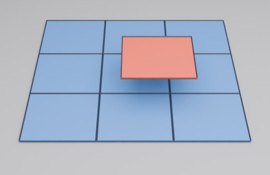

Bonus lesson
Duplicate
This tool duplicates the selected elements without creating any connections with the rest of the mesh, unlike Extrude. In Edit Mode, find it under Mesh › Duplicate, or press Shift+D.


How it works
The duplicate is placed at the location of the original. Once the duplication is done, only the new elements are selected, and you are put into move mode automatically so you can move your copy elsewhere.
The Toolbar has settings for Vector offset, Proportional Editing, Duplication Mode and Axis Constraints.
Duplicated elements belong to the same vertex groups as the originals. The same goes for material indices and the edge Sharp and Seam marks.
Read the manual page on Duplicate.
Try it
This exercise is our own suggestion and has not been run step by step in the GUI. Add a plane, enter Edit Mode and subdivide it a few times. Select one face, press Shift+D, move the mouse and click. Use Ctrl+Z to undo.